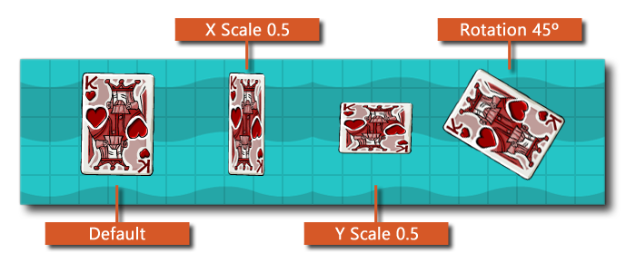

此函数类似动作绘制精灵，但此动作有更多选项，可以改变精灵的比例，混合方式，旋转角度，待绘制的帧。修改这些值 不会修改到资源（只是修改绘制时的效果） ，你可以使用任何变量 精灵属性变量而不是直接使用函数的参数的值。下图展示了不同的值如何对绘制精灵生效：The image below illustrates how different values affect the drawing of the sprite: 
注意：启用WebGL时，建议仅为HTML5目标使用颜色混合，但如果未启用混合颜色，则仍可设置混合颜色，并且它将正常混合精灵。任何形式的混合会创建一个副本精灵储存在缓存，当需要时可供使用。如果你混合多种颜色，并且没有启用WebGL，将会降低你的游戏性能。如果你不希望使用WebGL，可以设置字体缓存大小以尝试使用函数 sprite_set_cache_size </ t2> </ a1>来限制此值。注意：这个动作只能用于各种 绘制动作，如果用在其它位置将不生效。
参数 描述 精灵 待绘制的精灵 帧 待绘制的精灵的帧 (使用了内置变量 image_index 为当前帧) X 绘制的x坐标 Y 绘制的y坐标The y position to draw at within the room X 缩放 x轴缩放比例因子（使用内置变量 image_xscale 作为当前x的比例） Y 缩放 y轴缩放比例因子（使用内置变量 image_yscale 作为当前y的比例） 旋转 绘制精灵时的旋转角度（0到360度，逆时针旋转，0度表示正右方。使用内置变量image_angle 进行当前旋转） 颜色 需要与精灵混合的颜色（默认为白色，你可以使用内置变量 image_blend 用作当前颜色变换）
上述代码检查了一个变量，如果它被设置为 真就绘制一个精灵（x和y轴的缩放比例为随机值，颜色语红色叠加），如果为假就绘制一个精灵使用默认参数。